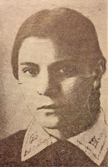

Родилась 14 декабря 1926 г. в г. Речица Гомельской области. Отец и мать Риммы были учителями.
Росла она вместе со старшими братья Владимиром и Марком. В 1934 г. семья переезжает в местечко Липень Осиповичского района Могилевской области. Училась Римма в школе хорошо и даже взяла шефство над классом по изучению географии. Вдумчивая, сдержанная, она с детства отличалась огромной силой воли. Римма мечтала пойти по стопам родителей и стать учителем, преподавать свой любимый предмет – географию. Но планы нарушила война.
С первых дней оккупации Римма вместе с братьями Владимиром и Марком участвовала в активной борьбе с гитлеровцами.
В июне 1942 г. вслед за братьями вступила в партизанский отряд им. И.В. Сталина. Учитывая молодой возраст, Римму зачислили в хозяйственную роту. А Римма ежедневно требовала перевода в боевую роту.
Римма организовала и возглавила первую в Осиповичском соединении диверсионную группу, которая состояла только из девушек.
Она также принимала участие в разгроме двух крупных гарнизонов противника, в 15 засадах и в 7 операциях по подрыву мостов на железной дороге.
Римма была не только достойным бойцом, но и верным товарищем. Однажды Римма с партизаном ушли на боевое задание. Они наткнулись на мину и оба были ранены. Истекая кровью, Римма 8 километров тянула на себе раненого товарища.
1 июля 1944 г. во время соединения с частями Красной Армии, отряд столкнулся с отступающей группой врага. Партизаны заняли оборону, Римма сдерживала гитлеровцев, пока не опустел диск ее автомата. Затем она бросилась в атаку, увлекая за собой боевых товарищей. В этот момент вражеские пули сразили отважную партизанку.
Похоронена Римма Владимировна Кунько в братской могиле в Осиповичах. Посмертно награждена орденом Отечественной войны I степени. Ее именем названа улица в г. Осиповичи.
Римма Владимировна Кунько

На главную